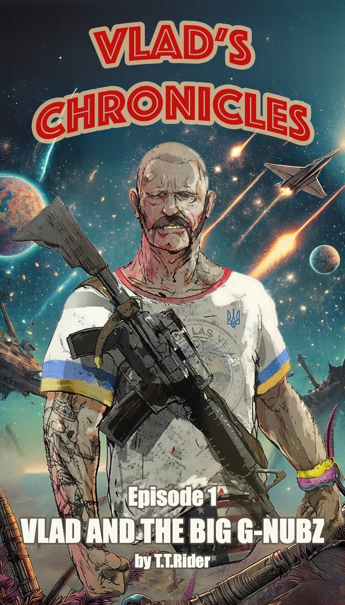

Disclaimer
The novels of Vlad’s Chronicles are an exclusive comedic journey tailored specifically for the delightful members of the Hopperverse
If you stumbled upon these adventures by accident, be warned: Vlad’s galaxy-hopping escapades, gummy-fueled rulers, and questionable fashion sense may seem more perplexing than trying to explain interstellar BBQ etiquette to aliens.
Non-club members risk bouts of laughter-induced confusion, mild existential crises, or sudden cravings for Ukrainian gorilka.
Read responsibly, and remember—without Coffee with Christopher context, Vlad’s misadventures make about as much sense as a fanny pack in space.
This novel is a wild ride of fiction!
Any names you stumble across, especially those that sound like they belong to Hopperverse members or die-hard Coffee with Christopher fans, as well as the characters, places, and shenanigans within, are purely figments of the author’s imagination—trust me, it’s a pretty bizarre place!
If you happen to see any resemblance to actual events or real people (photos included!), it’s entirely by accident—not a conspiracy!
Seriously, just dive into this chaotic world, have a blast, and keep in mind that the author is just here to sprinkle a little ridiculous fun into our otherwise serious lives.
Enjoy the laugh riot!
Vlad’s Chronicles
by T.T.Rider
Episode 1
Vlad
and
The Big G-Nubz
It has been many years since the Earth was raided by ruthless space invaders and plundered of her most important resource - People. After the war against them ended, people lost the way to come back. So, being a superiorly resilient species, humans settled across the known Galaxy and made it their own.
And all these years, Vlad, the hero of that war, spent roaming around the Galaxy to find humans in a slight chance to reunite with his true love. No, not love! It’s more like a memory of a good time. OK, maybe love, but you said it, not me.
Armed with a space map provided by Insarka, the new Queen of Plushies, his sexually incompatible best friend, and his Hyperspace Tinder account, Vlad had visited many planets in his hopeless journey. But the list of stars was long, and his hope, along with the other crucial parts of his body, was still strong and unwavering.
When his ship returned to standard space, in front of Vlad lay a beautiful planet, mostly covered by the ocean. Insarka’s human detector showed him a place on a remote island populated by a human colony.
“That could be it!” Vlad muttered. “What could be better, reuniting with a long lost lover on a tropical island? I hope their room service is as good as it was in Vegas.”
Vegas, that magic city, was always on Vlad’s mind.
Vlad landed his scout spaceship on a beach and got out dressed in his usual business attire. His tattered T-shirt, emblazoned with a Ukrainian trident, clung to bulging arms that seemed more suited for wrestling bears than casual visits. A garish American flag fanny pack bounced at his waist, absurdly at odds with the heavy weapon slung over his shoulder like a casual accessory.
As Vlad approached the village, Christopher, the local jester, couldn’t hide his excitement.
Christopher was a beacon of relentless optimism in the village. His bald head gleamed like a polished stone under the sun, and his perpetually beaming smile could disarm even the grumpiest person ever, the village ruler. Known for his hearty laugh that echoed through the village square like a contagious melody, Christopher was the rare soul who seemed utterly unaffected by the hardships of life.
Yet, beneath his humor lay a sharp wit and an uncanny ability to read people, often providing insight wrapped in-jokes that left even the village’s leaders scratching their heads. Whether juggling stories or diffusing tensions with a perfectly timed quip, Christopher was as indispensable as he was unpredictable.
Seeing Vlad from a distance, he exclaimed, “Well, I’ll be! Who is that walking up the road with the confidence of a bear who just raided a beehive? His mustache alone looks like it could fight a wild boar and win. That shirt of his has been through a war—literally, I think. It’s got more personality than some folks around here. And is that… an American flag fanny pack? Sweet mother of coconut, this man is part freedom fighter, part fashion disaster. “Oh, and look at that weapon slung across his shoulder like it’s just another casual day at the market.
“Is that a smiley-face charm dangling off his gear? If this man’s about to bring chaos, at least he’s doing it with style—and maybe a sense of humor. Somebody fetch Baba Lyuba; she’ll want to see this guy.”
Walking steadily with unwavering determination, Vlad approached the village. Each step was deliberate, his gaze scanning his surroundings with the keen eye of someone who had seen much and trusted little. As he crossed the threshold of the settlement, his eyes were met with a scene of striking natural beauty.
“This must be heaven,” he murmured under his breath, his thick accent coloring each word.
When the alien invaders had abducted humans from Earth, they had taken everything but the people themselves. Clothing, possessions, and even cultural artifacts were left behind. It wasn’t surprising, then, that on this remote tropical island, the villagers had adapted to their new circumstances, wearing nothing but simple loincloths. Vlad took a slow, deliberate look around before muttering to himself, “Hmmm… some of these people, maybe clothes would be better.”
His unease grew as he noticed an odd detail about the villagers. Every single one of them—men and women alike—was missing the middle toe on their right foot. The peculiarity startled Vlad so much that, for a brief moment, he forgot to admire the scantily clad women before him. And an unsettling group of men right behind him.
“What the hell have you done to yourselves?” Vlad asked, his voice tinged with genuine confusion as he gestured toward their missing toes.
Christopher, the village’s perpetually jovial jester, stepped forward, grinning from ear to ear. “Why, it’s a sign of respect for our fearless leader, the Big G-Nubz! Long ago, in a glorious battle against… well, unseen enemies, he lost his toe. When he united us on this island, we all cut off our own middle toes in devotion to him and his wisdom.”
Christopher leaned closer to Vlad, his voice dropping to a conspiratorial whisper. “Though, between you and me, I’ve started to question his wisdom lately. Too many gummies, if you catch my drift.”
Before Vlad could process this strange ritual of the toe sacrifice, their conversation was interrupted by the sound of a sharp, deliberate throat-clearing. Turning, Vlad saw a formidable woman approaching with the bearing of a general and the precision of a librarian—which, incidentally, she once had been. Lynn, the village’s de facto enforcer and chief adviser to the Big G-Nubz, exuded an aura of authority so palpable it seemed to part the very air around her. Her glasses glinted menacingly in the sunlight, and her expression was one of practiced disdain.
“Bring him to His Wisdom, the Big G-Nubz,” she commanded, her tone sharp enough to cut steel. The villagers scattered like startled birds, rushing to comply. No one dared challenge Lynn—not unless they had a death wish or an extremely well-thought-out escape plan.
Vlad was promptly surrounded by a group of men armed with long spears. They formed a loose semicircle around him, their weapons pointed just enough to imply menace but not outright hostility.
Lynn’s voice cut through the tension. “No funny business,” she hissed, narrowing her eyes at Vlad.
The procession made its way to the center of the village, where a raised dais stood. Atop it sat the man himself—His Wisdom, the Big G-Nubz. Unlike the other villagers, who were clad in their minimalist attire, the Big G-Nubz was dressed in a loud Hawaiian shirt that seemed more suited for a midlife crisis cruise than the throne of a tropical island kingdom. His ever-present sunglasses obscured his eyes, adding an air of mystique to his already eccentric appearance. A bucket of brightly colored gummies sat within arm’s reach, and he routinely plucked a handful as he surveyed the scene with an expression that oscillated between boredom and amusement.
The Big G-Nubz leaned back in his seat, popping a gummy into his mouth before addressing Vlad with the casual arrogance of someone who had nothing to prove.
“Who the hell are you, and what brings you to my world? We’re doing just fine here without uninvited guests.”
Vlad’s patience, already frayed from years of fruitless searching, began to wear thin. Puffing out his chest, he replied,
“The name is Vlad. I am human, like you. I look for other humans—one human in particular.” His accent thickened as his temper flared. “And watch your tongue, Big Man. No one talks to Vlad this way and stays breathing for long!”
The Big G-Nubz was unimpressed. He leaned forward slightly, his expression unchanging. “Did you bring gifts? A man of your… stature should know better. I collect spaceship models. You show up empty-handed, and you expect respect?”
Lynn, standing nearby with her arms crossed, interjected with a sinister smirk. “Perhaps we should drill some new holes in him. You know, for exploration’s sake.”
Christopher, ever the entertainer, chimed in with a laugh. “Let’s do it! We haven’t had this much fun since the last guy showed up. What was his name again? Jeff? Poor Jeff.”
Vlad growled, his hand tightening around the rifle slung over his shoulder. “No holes! No drilling! Vlad explores, not the other way around! Anyone tries, Vlad will explore them—permanently!”
The villagers erupted into laughter. Even the Big G-Nubz cracked a gummy-fueled grin. Christopher patted Vlad on the back, saying, “Relax, big guy. We’re just messing with you. Violence isn’t really our thing. Well… except for Jeff. He had it coming.”
The Big G-Nubz stood, his Hawaiian shirt billowing slightly in the breeze. “Come on, let’s eat. We have a boomzick for dinner. It’s like chicken, but… angrier.”
The feast was as lively as it was bizarre. Vlad shared tales of his adventures, each more outrageous than the last, while the Big G-Nubz poured him shots of a questionable whiskey brewed by the village’s resident madman.
Late into the evening, as the firelight flickered and the laughter died down, the Big G-Nubz leaned toward Vlad.
“So, who’s this person you are looking for?”
“Nikki from Vegas,” Vlad replied, his voice tinged with longing.
“Nikki? The Nikki?”
“You know Nikki?”
The Big G-Nubz nodded sagely. “Everyone knows Nikki. But she’s lost to the stars, my friend. Disappeared ages ago.”
Vlad’s shoulders slumped. “I hoped she’d be here.”
As the night wore on, Vlad finally rose to leave. “I should go. Many planets still to check.”
Christopher waved enthusiastically. “Stay! We’ll find you a place. Lynn just needs to make some… adjustments. You know, cut an extra ‘member’”
Lynn’s smile turned wicked. “Oh, with pleasure.”
Vlad smirked. “Sorry, no adjustments. Vlad leaves in one piece. With ‘members’ intact.”
The Big G-Nubz chuckled, dismissing Lynn with a wave. “Don’t mind her. She’s all bark… mostly.”
As Vlad boarded his ship and prepared to leave, he looked back at the strange, endearing village.
“I’ll be back,” he muttered to himself.
“With Nikki or without her. This place… is a good place. It is home.”